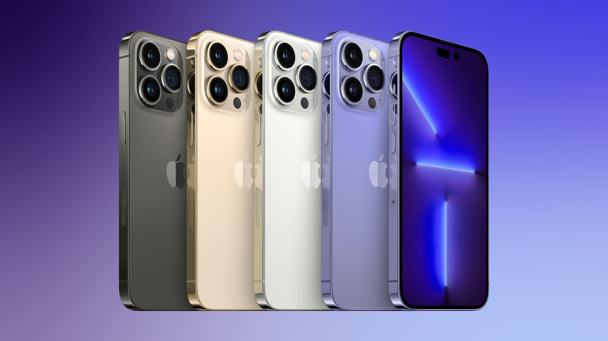

Iphone
Iphone
Iphone
About Iphone:
The iPhone is a line of smartphones designed and marketed by Apple Inc. These devices use Apple's iOS mobile operating system. The first-generation iPhone was announced by then-Apple CEO Steve Jobs on January 9, 2007. Since then, Apple has annually released new iPhone models and iOS updates. As of November 1, 2018, more than 2.2 billion iPhones had been sold.
The iPhone has a user interface built around a multi-touch screen. It connects to cellular networks or Wi-Fi, and can make calls, browse the web, take pictures, play music and send and receive emails and text messages. Since the iPhone's launch further features have been added, including larger screen sizes, shooting video, waterproofing, the ability to install third-party mobile apps through an app store, and many accessibility features. Up to iPhone 8 and 8 Plus, iPhones used a layout with a single button on the front panel that returns the user to the home screen. Since iPhone X, iPhone models have switched to a nearly bezel-less front screen design with app switching activated by gesture recognition. The older layout today is still used for Apple's currently-produced iPhone SE series.
The iPhone is one of the two largest smartphone platforms in the world alongside Android, forming a large part of the luxury market. The iPhone has generated large profits for Apple, making it one of the world's most valuable publicly traded companies. The first-generation iPhone was described as "revolutionary" and a "game-changer" for the mobile phone industry and subsequent models have also garnered praise. The iPhone has been credited with popularizing the smartphone and slate form factor, and with creating a large market for smartphone apps, or "app economy". As of January 2017, Apple's App Store contained more than 2.2 million applications for the iPhone.
Source : Wikipedia

Features of Iphone
Cost Price of all Iphones so far